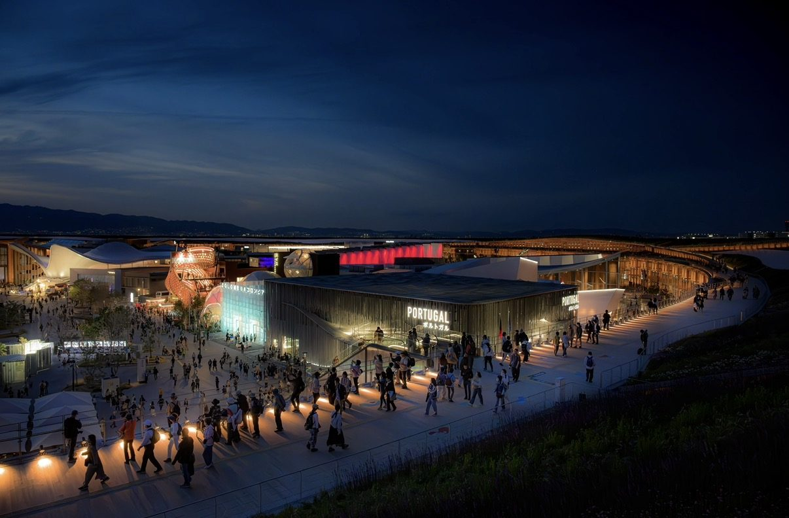
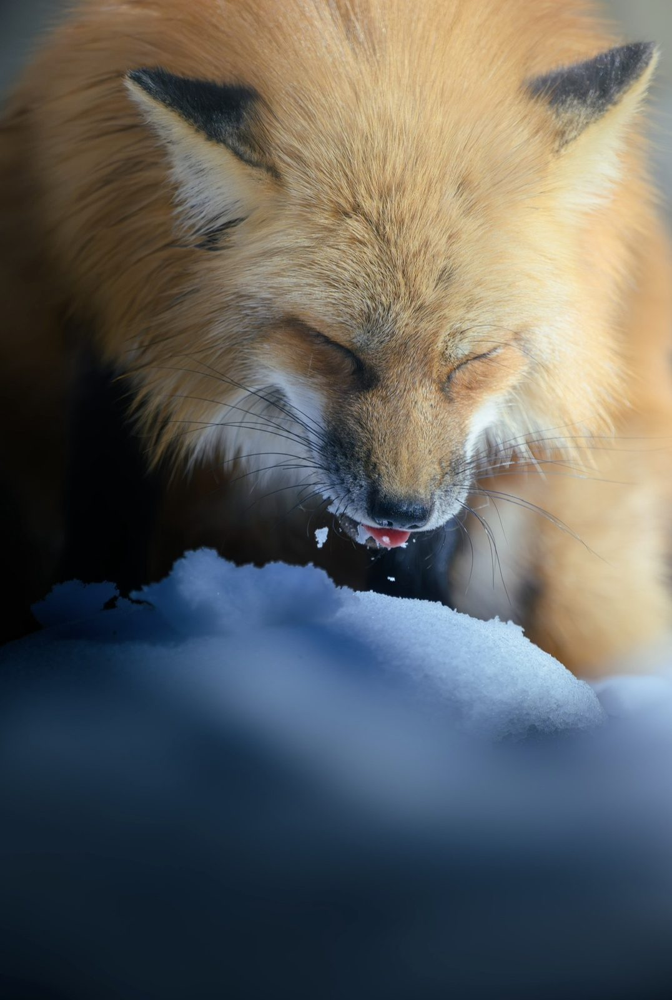
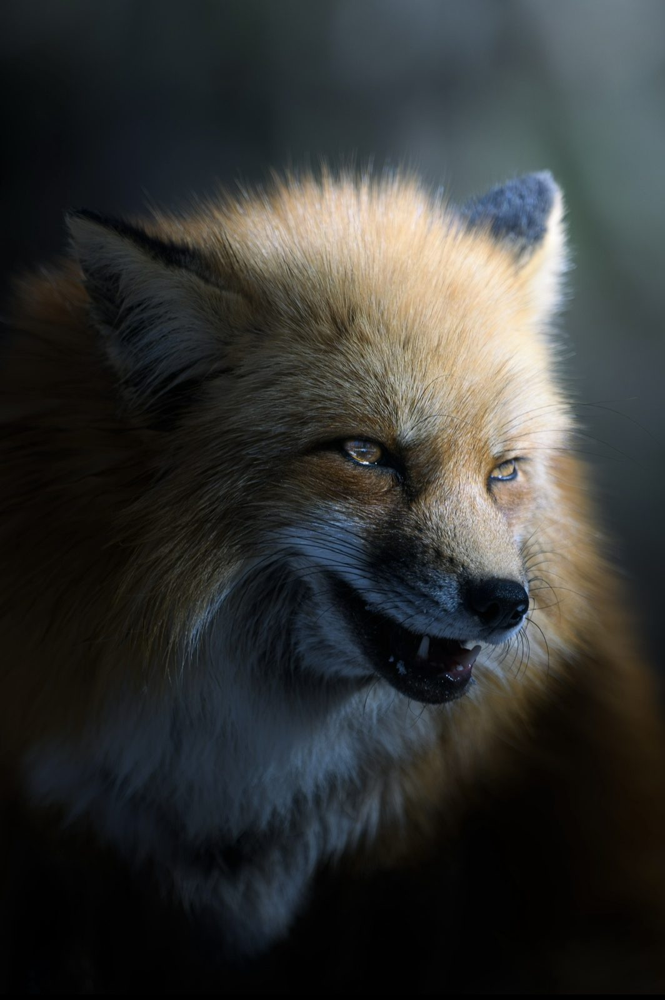
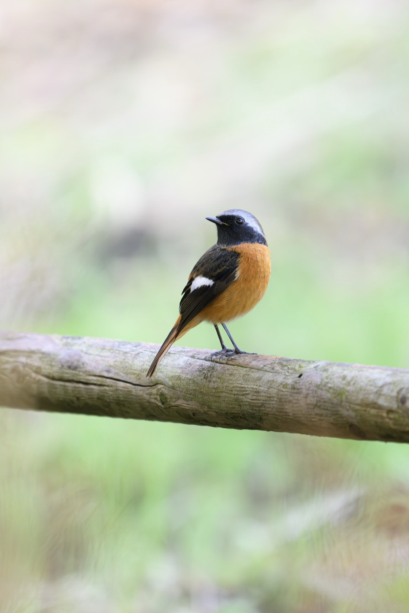
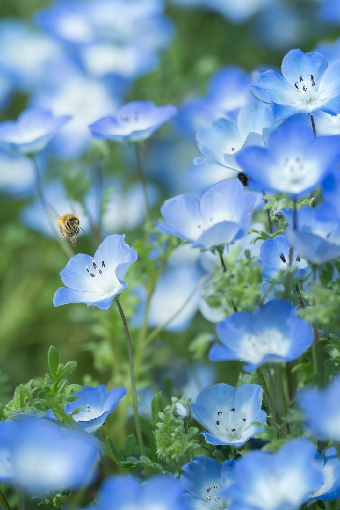
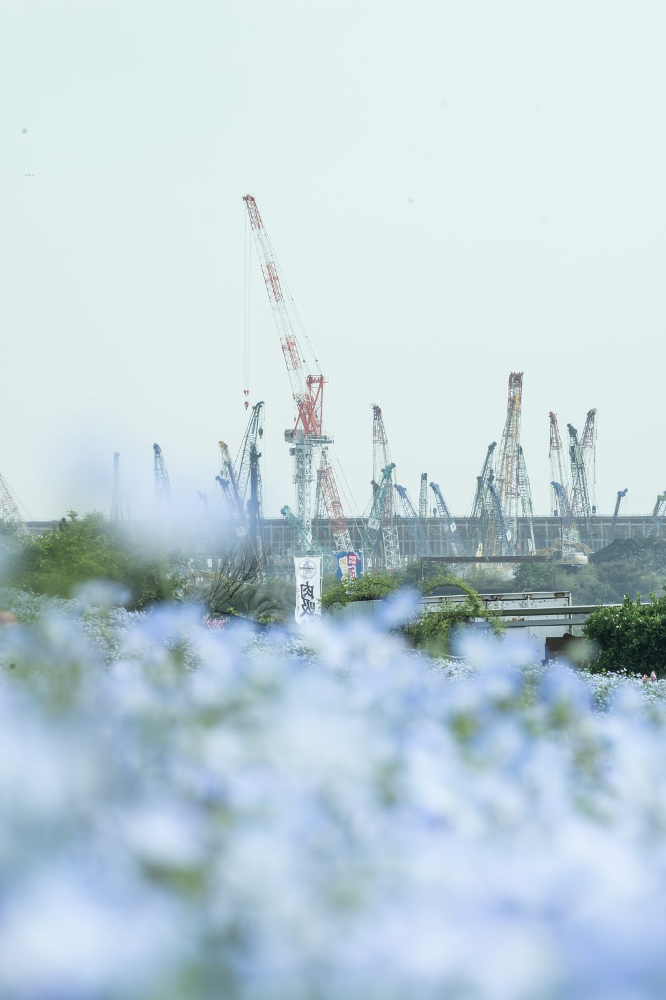
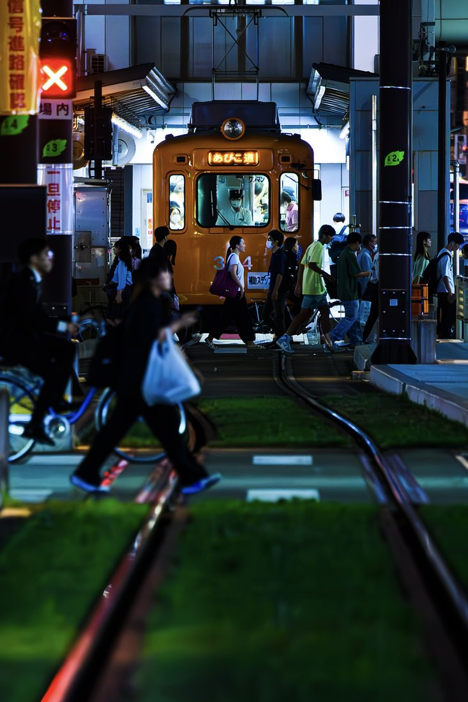
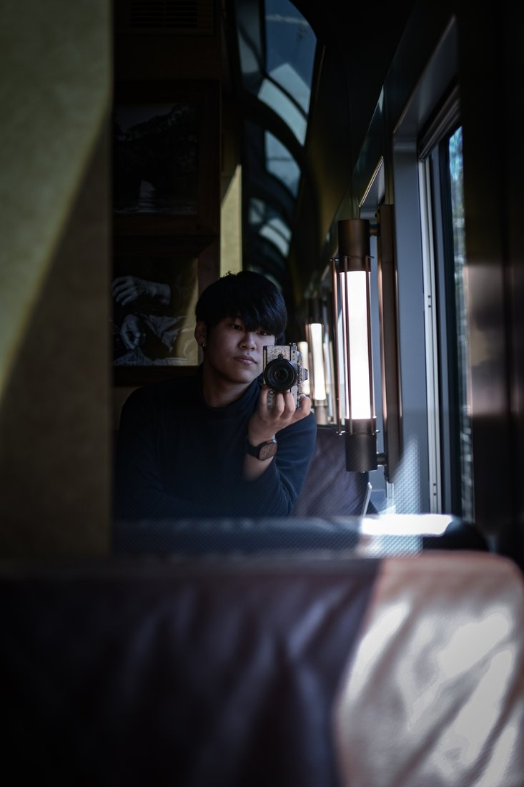

aeva
記録し、つなぐ。Record and connect
写真で日本の風景・旅・動物を記録し、地域と人をつなぐ。 Capturing Japan — connecting places and people through photography.

いいと思ったら、とことん。
All in, once it clicks
観光名所の華やかさよりも、
その場の空気感に惹かれます。
日本の風景、旅、動物を中心に、
写真でも、それ以外でも、
気になったら関わり方は選びません。
Drawn to the atmosphere of a place over the dazzle of famous sights. Centered on Japan's landscapes, travels and wildlife — and when something draws me in, I don't limit how I engage, through photography or anything else.
作品Travel · Wildlife · Landscape · City












新津 力Riki Niitsu
旅・動物・野鳥・風景・都市スナップ、そして日本の地域や観光地の空気感を
撮影しています。
Instagram を主な発信拠点に、
日本国内外へ写真を届けています。
- 2022奥多摩町 × 多摩大学の連携協定
（経営情報学部・松本祐一ゼミ）に、
学生当事者として関与 - 2024奥多摩町の地域交流拠点カフェ
「奥多摩AUBA」の立ち上げに、
事業部長として参画 - 大阪・梅田を中心に、都市の観察を継続
（約4年） - 写真・映像での記録・発信
（Instagram @aeva_arte）
お気軽にどうぞ。
撮影や展示、写真の利用、地域・観光に関わることなど、ちょっとしたことでも気軽にご連絡ください。ざっくりしたご相談でも大丈夫です。 For photo work, exhibitions, image use, or anything tied to local communities and tourism — feel free to reach out, even about something small. Rough, early-stage ideas are welcome too.